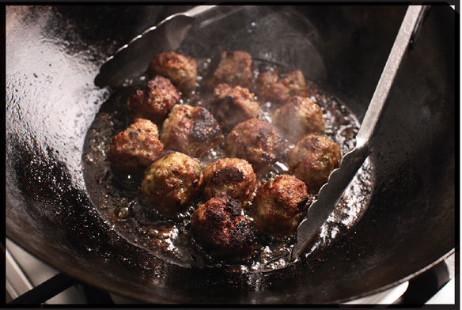
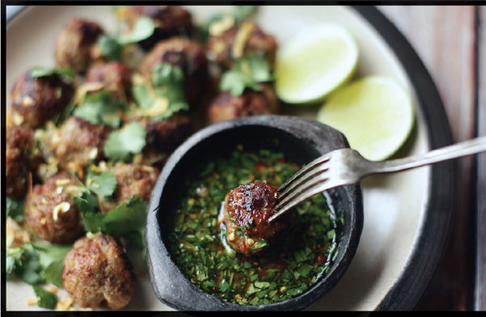
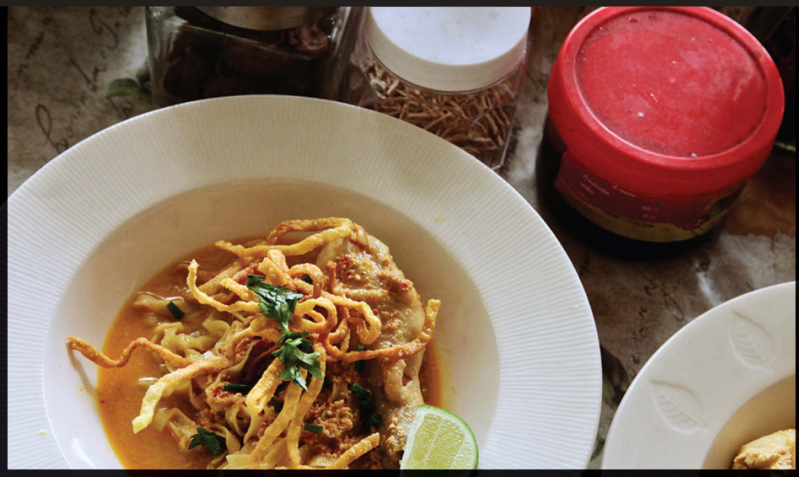
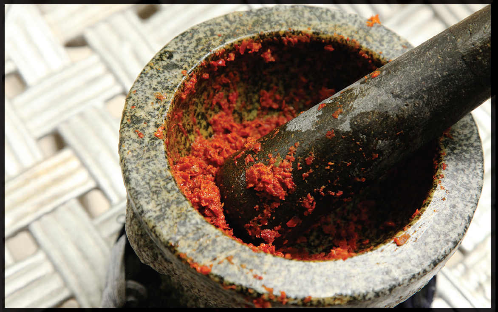
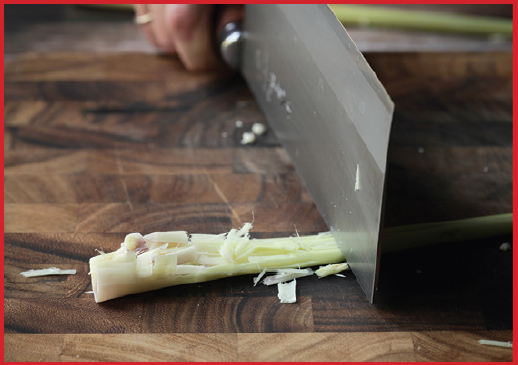
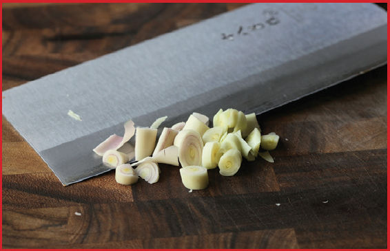
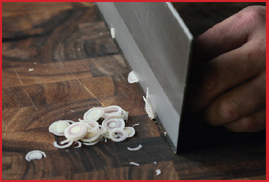

GREEN CURRY SAUSAGE MEATBALLS
|
Yield Serves 6 to 8 as an appetizer |
Active Time 15 minutes Total Time 15 minutes |
INGREDIENTS
2 pounds (900 g) freshly ground pork shoulder
6 ounces (170 g/about ¾ cup) Thai green curry paste, homemade (here) or store-bought
¼ cup (60 ml) peanut, rice bran, or other neutral oil
Fried shallots, cilantro, and thinly sliced or hand-torn makrut lime leaf, for garnish (optional)
Curry pastes can make a great flavor base for homemade sausage, and making it is as simple as adding curry paste to ground pork. When mixing sausage, the most important part is thoroughly kneading the mixture. This causes pork proteins to cross-link, which is what gives sausage its springy, bouncy texture. As you mix sausage, look for a thin film of pork proteins to start forming on the side of the mixing bowl as an indication that the protein has sufficiently cross-linked.
This mixture can be cooked in a skillet in patties, it can be made into small balls to simmer in curry or soup, or it can be formed into patties or logs and fried or grilled. Serve with Nam Pla Prik (here) or Jaew (here) for dipping.
DIRECTIONS
Combine the pork shoulder and curry paste in a stand mixer fitted with a paddle attachment. Mix on medium-low speed until the mixture is tacky and leaves a thin film of protein around the edges of the bowl, about 5 minutes. Alternatively, knead thoroughly by hand. Form into patties, balls, or logs and cook as desired.


How to Make Khao Soi
“So that’s what it’s supposed to taste like” is a frequent thought that goes through my head when traveling. It’s what I thought in Chiang Mai the first time I tasted khao soi, the Chin Haw dish of chicken and noodles in a coconut and curry broth. It was brought to the North of Thailand, Laos, and Myanmar by Yunnanese immigrants. I mean, I’d tasted the dish many times back home, but it was always through the lens of cooks who had adapted recipes for themselves or for their customers. Tasting the real thing in situ lets you really understand its importance.
Of course, that’s all a load of BS. Arguments around authenticity can be interesting and enlightening, but only when they consider that the very concept of authenticity is like trying to shoot a target that is constantly zigzagging, being pulled this way and that. Even in Chiang Mai, there are hundreds of variations of khao soi—and we’re talking just the laksa-inflected Thai version here, not any of the other variants, which differ as widely as, say, pizza in the United States does. That said, the best khao sois I had shared some common traits: impeccably fresh and bouncy egg noodles, a richly textured broth so intense that it was served only in small quantities, layer upon layer of flavor made by picking the right aromatics and not being lazy with their treatment.
As northern Thailand’s de facto signature dish, it’s also one of its most regionally incongruous. Wet curry pastes, made by pounding roots, rhizomes, seeds, spices, herbs, and various fermented seafood products, don’t feature heavily in northern Thai cuisine, nor does coconut milk, the way it does in the curries of central or southern Thai. Stretchy, eggy Chinese wheat noodles are also not particularly common.
But it makes sense that khao soi is northern Thailand’s most popular export. As Chiang Mai–based American chef Andy Ricker pointed out in the New York Times, khao soi “is exotic without being weird and, most important, completely delicious.” It’s the kind of dish everybody can love.

THE CURRY PASTE
Similar in profile to Muslim-influenced Massaman curry pastes, khao soi paste is made with a combination of moist aromatics and a range of dry spices. You can use the standard process of blooming the curry paste in hot fat, but here’s an alternative technique I learned from a local chef in Chiang Mai: roast the aromatics in a foil pouch until charred.
This accomplishes two goals. First, it helps develop an extra layer of flavor as aromatic compounds within the spices break down into smaller parts and reassemble into hundreds of new ones in a process known as the Maillard reaction. Second, it softens up the vegetables and begins the process of releasing their aromatics. This makes pounding the curry paste significantly easier (and, indeed, the technique also works for other types of curry paste if you want to add some charred flavor).

THE BROTH
Khao soi is a soupier dish than most other curry-style soups, using a combination of coconut milk and broth. Both chicken and beef are common choices, but I generally opt for chicken as it’s faster, easier, and store-bought chicken broth is better than store-bought beef broth. As with other curries, I add chicken directly to the bloomed curry paste before adding the liquid ingredients, then I let everything simmer until the chicken is cooked.
As it cooks, the broth should get thicker and break a little, with tiny droplets of flavorful spiced chicken fat pooling on the surface. It should also smell awesome.
THE NOODLES
Last element: the noodles. In Chiang Mai, khao soi invariably comes with yellow, stretchy, flat egg noodles about ¼ inch wide and ⅛ inch thick. Think fettuccine or linguine, if you will. In the West, you may see khao soi served with lo mein noodles or even fat rice noodles.
I don’t know what wacky, crazed mind came up with the idea of serving the noodles two ways in the soup, but khao soi gets a nest of crisply fried noodles perched on top of the slick, boiled noodles underneath. Personally, I’m never one to say no to extra fried things.
Stretchy noodles, crispy noodles, tender braised chicken, rich, warmly spiced broth, sharp shallots and pickled mustard root to garnish, and a squeeze of fresh lime. This crazy combination of flavors and textures is what makes khao soi so exciting.
Working with Lemongrass
Lemongrass has a wonderful aroma, but it is extremely tough and requires a bit of extra attention to make it edible. When shopping for lemongrass, look for healthy-looking stalks with minimal dried edges or spotty brown discoloration. Lemongrass can be stored in a plastic bag in the fridge for a few weeks or in the freezer indefinitely.
How to Use Lemongrass to Season a Broth
If you’re using lemongrass to season broth and then discarding it, the best technique is to use the back of a knife or cleaver to bruise and smash the stalk up and down its length so that it releases its flavor more easily to the broth.

How to Prepare Lemongrass for Curry Paste
Only the tender, bottom few inches of a lemongrass stalk are edible. Start by peeling off and discarding the outer leaves until you reach a pale yellow tender layer underneath. Next, cut the stalk about 5 inches from the base and check the cross section. If you notice any woody, tough-looking leaves, trim off a little more until all the leaves are tender. Keep the tender stuff and discard the rest of the trim.

Next roughly chop the tender parts and add them to your mortar to be pounded (discard the tough nub at the base).
How to Slice Lemongrass for Frying or Stir-Fries
Peel off the outer leaves and trim as for rough chopping. Then, using a very sharp knife, slice the lemongrass as thin as you can manage. The thinner the better! The sliced lemongrass can be chopped further for stir-fries if desired.
